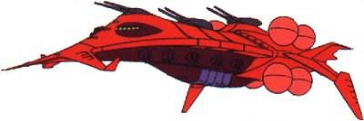

| Gwazine Zeon Space Force Battleship |
|
|  | |
General and Technical Data |
|
|
Unit type: battleship Operator: Zeon Duchy Dimensions: overall length 440 meters; overall width 320 meters; overall height 103 meters Weight: 108100 tons Construction: High Tensile Steel Propulsion: 8 x rocket engine Hangar capacity: 3x infantry, 20x mobile suit Launch catapults: 0 Fixed armaments: 3 x 2-barrel primary mega particle cannon turret; 5x port 2-barrel secondary mega particle cannon turret, 5x starboard 2-barrel secondary mega particle cannon turret; 18x 2-barrel 155mm antiaircraft machinegun |
 RPG quick stats sheet
RPG quick stats sheet | Technical and Historical Notes | |
|
The Gwazine class battleship is the largest Zeon warship in production, and also the most heavily armed. It is much larger than the Federation's Magellan-class, and a massive threat to anything around it.
Its primary armament consists of three gargantuan double-barreled turrets, each one bigger than a Komusai. Ten smaller turrets run along its ventral side, providing excellent coverage. Finally, eighteen heavy antiaircraft machineguns run along its surface, providing unbridled protection against enemy mobile suits and other craft. The Gwazine's greatest asset (aside from its ridiculous armoring and heavy weapons) is its massive mobile suit hangar, with space to service and carry twenty units. This gives it a preposterous advantage on the battlefield; even the Federation's in-production heavy battleship may be unable to stop this monster. |
|